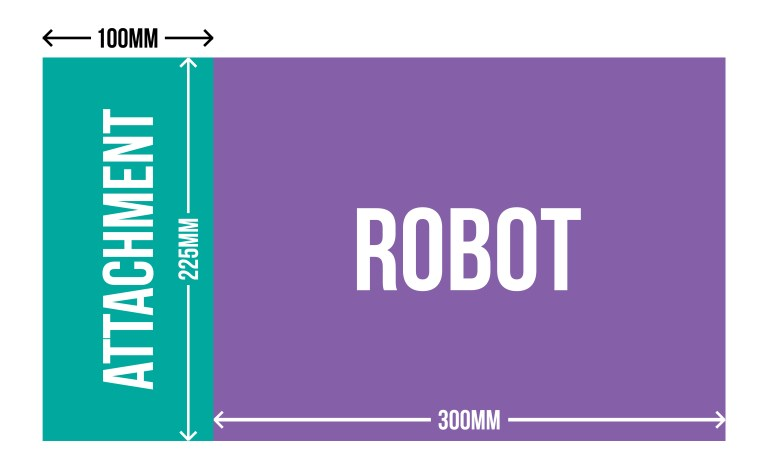

18 yaşının altındaki yarışmacılar sorumlu bir yetişkinle birlikte katılmalıdır.
Her takımın en az bir üyesinin asıl organizasyona katılabilmesi gerekmektedir.
Maksimum takım üyesi sayısı için bir kısıtlama bulunmasa da 10 kişiden fazla üyesi olan takımların koordine olmasının daha zor olduğunu hatırlatırız. Takımınızın üye sayısı size yarışmaya hazırlanırken sorulacak ve “çalışma odaları” bu sayıya göre atanacaktır.
Tüm robotlar kapalı veya çalışma odalarında blokların üzerinde kalmalılardır. Bu, sürücü kontrolü karışıklıkları veya otonom/sürücü kontrolü hatalarının robotun masadan düşmesine, veya herhangi bir şekilde zarar görmesini engellemek için yapılır.
Robot Kuralları
Çekirdekte Raspberry Pi
Tüm robotların (core), çekirdeklerinde, kodlama işleminin büyük bir kısmını taşıyan operasyonelin Raspberry Pi olması gerekir.
Arduino, micro:bit gibi başka panolar veya mikrodenetleyiciler robotta kullanılabilirler, ancak Raspberry Pi’ın genel kontrolde olması gerekir.
Oyun kontrolcü, bilgisayar, cep telefonu veya tablet gibi robotun kontrolünün sağlanabileceği cihazlar robotu kontrol ederken kullanılabilirler, ancak yarışma sırasında fiziksel olarak robota bağlı olmamalılardır.
Güç
Tüm robotlar pillerle çalışmalıdır.
Pil paketlerini şarj etmek için şebeke gücü kullanılabilir.
Eğer LiPo pilleri kullanılıyorsa, her/herhangi şarj etme işlemi mutlaka ateşe dayanıklı bir çanta içerisinde yapılmalıdır. Bu çantalar (poşetler) bir çok pil satan yerlerde olabilir (örneğin: HobbyKing). Bu, kazaları önlemek içindir.
Robot Tipleri
Hava (uçan) robotlara izin verilmez, örn. dronlar.
Yürüyen ve kendini dengeleyebilen robotlara izin verilir.

Büyüklük
Yarışan robotların temel şasisi (tekerlekler ve çıkıntılar dahil olmak üzere) 225mm x 300mm’e sığmalıdır. İleri hareket ederken:
Maksimum genişlik (en) 225mm’den fazla olmamalıdır.
Maksimum uzunluk (boy) 300mm’den fazla olmamalıdır.
Spesifik görevler için robotlara önü en fazla 100mm büyütecek ek parçalar eklenebilir. Bu sebeple, üstüne ek parçalar ekli olan bir robotun en büyük boyutları 225 mm x 400 mm olabilir.
Bir yükseklik limiti olmasa da lütfen ağır robotların bazı görevlerde zorlanabileceğini unutmayınız!
Ek parça eklerken, ana şasi, Raspberry Pi ve kumanda düzenlemeleri aynı kalmalıdır.
Duman! Ateş!
Yarışmanın teması ne olursa olsun, robotunuz bilinçli olarak duman veya ateş yaymamalıdır. Bu yangın dedektörlerini harekete geçirecek ve genel olarak can sıkıcı olacaktır.
Bina içinde lehimlemeye izin yoktur. Fakat pil gücüyle çalışan bir havya getirip, bina içine duman girmeyecek şekilde, dışarıda kullanabilirsiniz.
Görevler
Robotunuzu test edebileceğiniz birden fazla görev olacak. Her birinin sonucu net skorunuza katkıda bulunacak.
Takımların her görevden kaç puan elde edebileceklerini öğrenebilmeleri için, puanlama sistemi Pi Wars tarafından yayınlanacak.